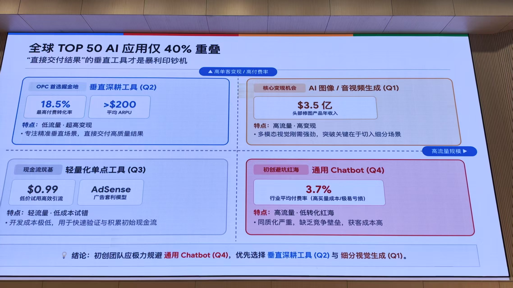
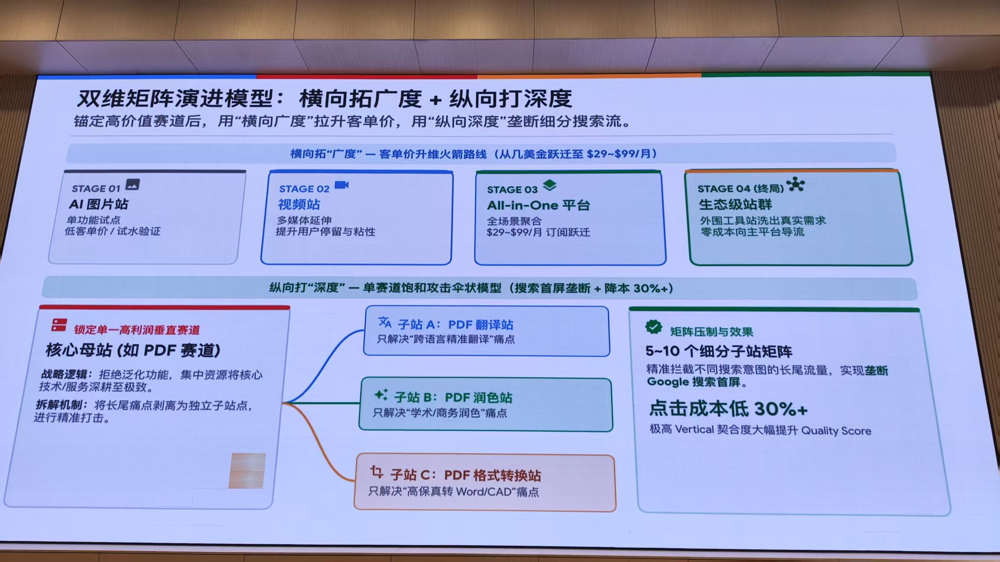
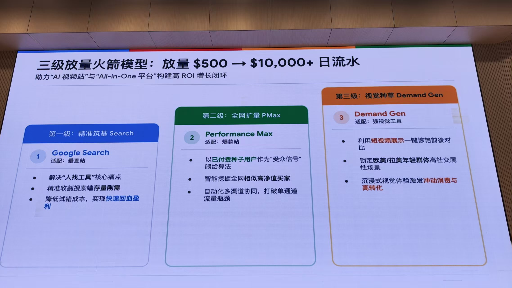
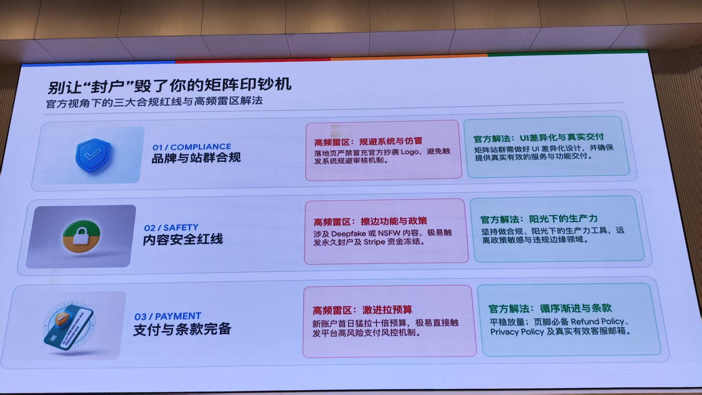
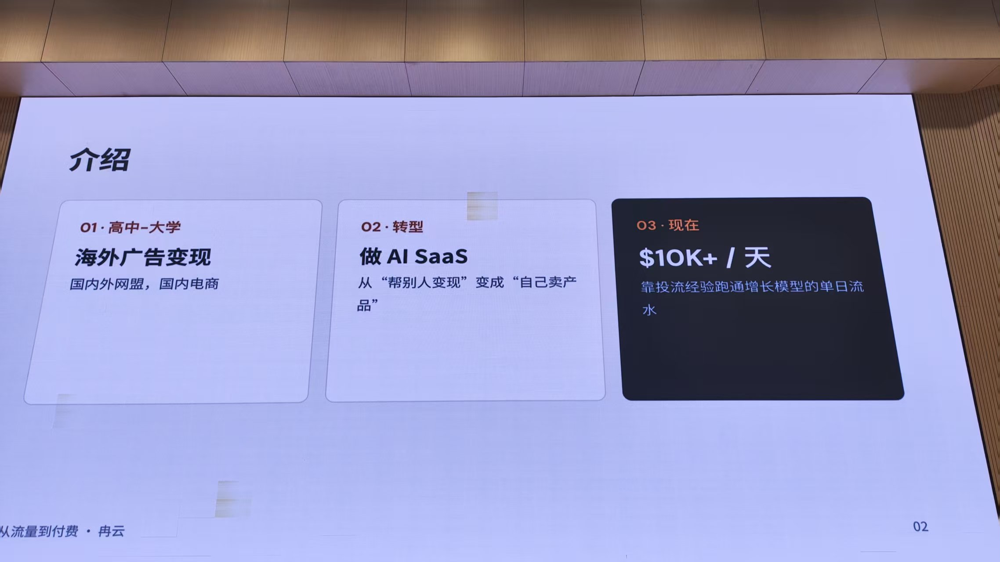

2026 年 11 月 6 日下午，哥飞在群里连发五张分享会 PPT 的现场照片（页脚署名「从流量到付费 · 冉云」），讲的是一套 AI 工具站的增长路径：选垂直赛道、搭站矩阵、用三级投放放量、守住合规红线。14:41 他又补了一句：大需求可以拆成小需求，一个需求上一个站去投广告。
一、选赛道：垂直工具才是印钞机
第一页的前提是：全球 TOP 50 AI 应用只有 40% 重叠，「直接交付结果」的垂直工具才是暴利印钞机。页面用四象限给 AI 应用分类，横轴是高流量规模，纵轴是高单客变现与高付费率。

- Q2 垂直深耕工具：最高付费转化率 18.5%，平均 ARPU 超过 $200，特点是低流量、超高变现；专注精准垂直场景，直接交付高质量结果，被标为「OPC 首选掘金地」。
- Q1 AI 图像 / 音视频生成：头部修图产品年收入 $3.5 亿，高流量、高变现；多模态视觉刚需强劲，突破关键在于切入细分场景。
- Q3 轻量化单点工具：用 $0.99 低价试用高效引流，或走 AdSense 广告套利模型；轻流量、低成本试错，用于快速验证与积累初始现金流。
- Q4 通用 Chatbot：行业平均付费率只有 3.7%，高买量成本、极易亏损；同质化严重、缺乏竞争壁垒，获客成本高，被归为「初创避坑红海」。
页面的结论很直接：初创团队应极力规避通用 Chatbot（Q4），优先选择垂直深耕工具（Q2）与细分视觉生成（Q1）。
二、搭矩阵：横向拉客单价，纵向垄断搜索首屏
第二页叫「双维矩阵演进模型」：锚定高价值赛道后，用横向广度拉升客单价，用纵向深度垄断细分搜索流。横向是一条客单价升维路线，从几美金逐步跃迁到 $29~$99/月。
- STAGE 01 AI 图片站：单功能试点，低客单价，用来试水验证。
- STAGE 02 视频站：多媒体延伸，提升用户停留与粘性。
- STAGE 03 All-in-One 平台：全场景聚合，进入 $29~$99/月订阅区间。
- STAGE 04 生态级站群（终局）：用外围工具站洗出真实需求，再零成本向主平台导流。
纵向是单赛道饱和攻击的伞状模型，目标是垄断搜索首屏并把点击成本降低 30% 以上。做法是锁定一个高利润垂直赛道做核心母站，把长尾痛点剥离成独立子站，精准打击。以 PDF 赛道为例：

- 子站 A：PDF 翻译站，只解决「跨语言精准翻译」痛点。
- 子站 B：PDF 润色站，只解决「学术 / 商务润色」痛点。
- 子站 C：PDF 格式转换站，只解决「高保真转 Word / CAD」痛点。
5~10 个这样的细分子站组成矩阵，可以精准拦截不同搜索意图的长尾流量，实现垄断 Google 搜索首屏；页面上给出的预期是点击成本低 30% 以上，极高的 Vertical 契合度大幅提升 Quality Score。
三、放量：三级火箭从 $500 到 $10,000+ 日流水
第三页把投放拆成三级火箭，定位是给「AI 视频站」与「All-in-One 平台」构建高 ROI 增长闭环，标题写的跃迁是放量 $500 到日流水 $10,000+。

- 第一级：精准筑基 Search，适配垂直站。解决「人找工具」的核心痛点，精准收割搜索端的存量刚需，降低试错成本、快速回血盈利。
- 第二级：全网扩量 PMax，适配爆款站。把已付费种子用户当作「受众信号」喂给算法，智能挖掘全网相似的高净值买家，用自动化多渠道协同打破单通道流量瓶颈。
- 第三级：视觉种草 Demand Gen，适配强视觉工具。用短视频展示一键惊艳的前后对比，锁定欧美 / 拉美年轻群体的高社交属性场景，靠沉浸式视觉体验激发冲动消费与高转化。
四、合规：别让「封户」毁掉矩阵
第四页从官方视角列了三条合规红线和对应解法，核心判断是：矩阵跑得再快，一次封户就能把现金流打断。

| 合规项 | 高频雷区 | 官方解法 |
|---|---|---|
| 品牌与站群合规 | 落地页冒充官方、抄袭 Logo，触发系统规避审核机制 | 矩阵站群做好 UI 差异化设计，确保提供真实有效的服务与功能交付 |
| 内容安全红线 | 涉及 Deepfake 或 NSFW 内容，极易触发永久封户及 Stripe 资金冻结 | 只做合规、阳光下的生产力工具，远离政策敏感与违规边缘领域 |
| 支付与条款完备 | 新账户首日猛拉十倍预算，直接触发平台高风险支付风控 | 平稳放量；页脚必备 Refund Policy、Privacy Policy 及真实有效的客服邮箱 |
五、哥飞的补充：大需求拆小，一个需求一个站
14:41，哥飞用一句话把「纵向打深度」翻译成了可执行的动作：大需求如 PDF 可以拆需求，每一个需求都上一个站去投广告。
大需求，如 PDF，可以拆需求，每一个需求都上一个站去投广告，这样有两个好处：1. 降低用户决策成本，他想找的，就是我们网站主要提供的，他会认为找对了。2. 广告系统更容易找出我们产品的精准用户画像，给我们把广告展示到合适的用户群体里去，降低成本，提升转化率。
这两个好处正好对应前面两页：拆站解决的是「用户觉得找对了」，投放算法解决的是「找到相似人群」——一个提高转化，一个降低获客成本。
六、分享者背景

最后一页是分享者的自我介绍：高中到大学做海外广告变现，接触国内外网盟和国内电商；后来转型做 AI SaaS，从「帮别人变现」变成「自己卖产品」；现在标出的成绩是靠投流经验跑通增长模型，单日流水 $10K+。